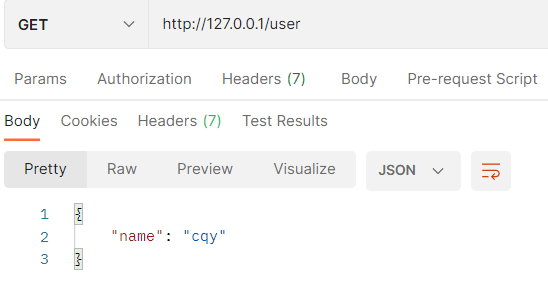
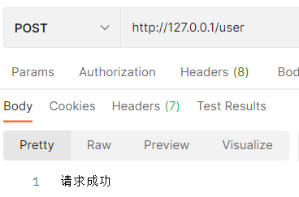
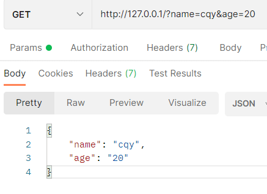
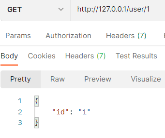
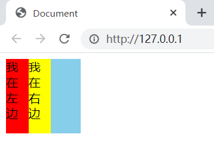
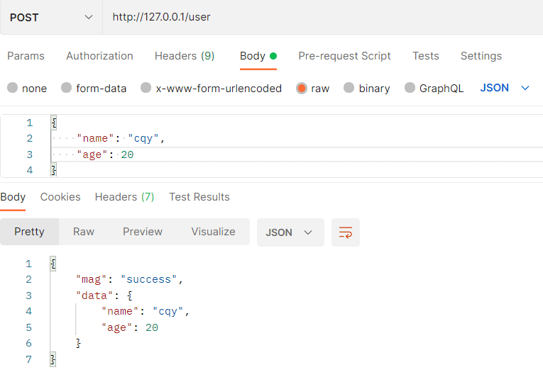
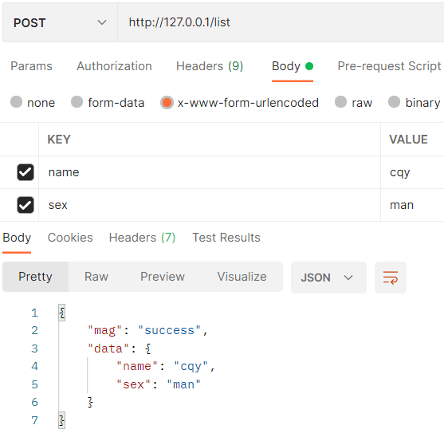
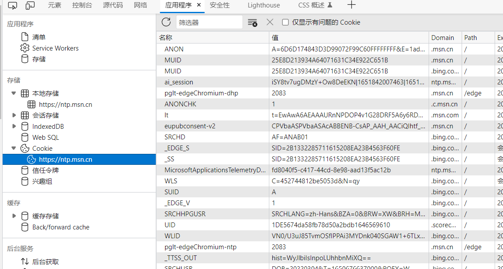
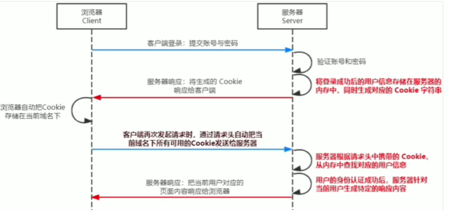
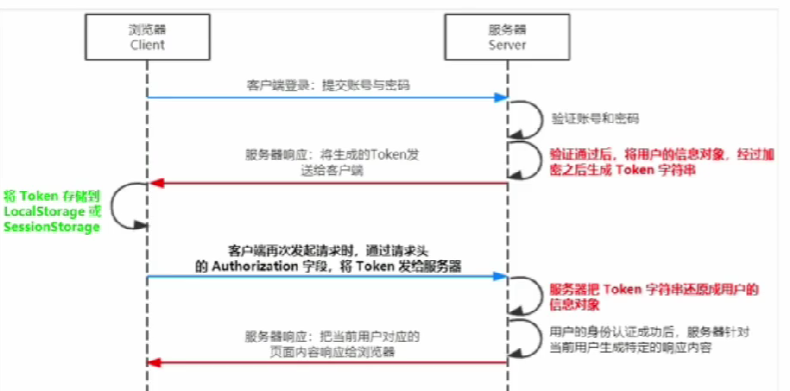

Node.js
Node.js
fs文件系统模块
readFile 和 writeFile
fs模块是Node.js官方提供的、用来操作文件的模块fs.readFile() 用于读取指定文件中的内容fs.writeFile() 用于向指定文件中写入数据
1 | //导入fs模块 |
读取文件: readFile()接收三个参数
参数一：指定文件的路径
参数二(可选): 编码格式
参数三：回调函数，拿到失败或者成功的结果
1 | const fs = require('fs') |
写入内容: writeFile()接收四个参数
参数一：目标路径
参数二：写入的内容
参数三(可选)：编码数
参数四：回调函数
1 | fs.writeFile('../file/2.txt', 'cqy', 'utf-8', (err) => { |
路径动态拼接
在fs模块操作文件时，如果操作的路径是以./或../开头的相对路径，很容易出现路径动态拼接错误问题，原因是我们操作node时所处的目录可能不正确，可以通过提供一个完整路径来解决问题
__dirname 表示当前文件所处目录
1 | fs.readFile(__dirname + '/file/1.txt', 'utf-8', (err, dataStr) => { |
path路径模块
path模块是Node.js官方提供的模块，用于处理路径的模块path.join() 用来将多个路径片段拼接成一个完整的路径字符串，语法格式 path.join(...[paths])path.basename() 用来从路径字符串中将文件名解析出来path.extname() 用来从路径字符串中将文件扩展名解析出来
1 | //导入 |
1 | //path.join() |
http模块
http模块是Node.js官方提供的，用来创建web服务器的模块
1 | //导入 |
创建最基本web服务器
1 | const http = require('http') |
Express
npm上的第三方包，用于创建web服务器，express基于http做了一些封装，可以更高效率的开发
安装：
1 | npm i express |
创建web服务器
1 | const express = require('express') |
GET和POST
可以使用app.get() 来监听客户端的GET请求，app.post()来监听客户端的POST请求
参数一: 请求路径
参数二: 请求函数(参数一：req(请求对象)，参数二：res(响应对象))
1 | const express = require('express') |


URL参数处理
GET请求通过req.query对象，可以访问到客户端通过查询字符串的形式发送到服务器的参数
GET请求通过req.params对象，可以获取URL中匹配的动态参数
1 | app.get('/', (req, res) => { |


托管静态资源
express.static()可以为我们创建一个静态资源服务器，将某个目录下的文件对外开放访问
1 | app.use(express.static(目标目录)) |
例如我们现在想将main目录下的文件放到静态服务器上
1 | //调用express.static对外提供静态资源 |

Express路由 路由模块化
调用express.Router()创建路由对象
1 | //将路由单独抽离为单独模块 |
Express中间件
当请求到达express服务器时，可以调用多个中间件，从而对请求进行预处理
express中间件本质上就是一个function处理函数
中间价的参数： req，res，next
注意： 中间件函数的形参列表中，必须包含next参数，而路由处理函数只包含req和res
next函数是实现多个中间件连续调用的关键，它表示把流转关系转交给下一个中间件或路由
中间件的作用： 多个中间件之间，共用一套req和res，所以我们在前面的中间件中为req或res添加自定义的属性或方法，在后面的中间件或路由也可以使用
1 | //定义一个最简单的中间件函数 |
全局生效的中间件
客户端发送的任何请求到达服务器之后，都会触发的中间件，叫做全局生效的中间件
通过调用app.use(中间件函数)，即可定义一个全局生效的中间件
1 | //接上一个代码块 |
局部生效的中间件
不定义在app.use()中，而是定义在想要生效此中间件的路由实例
1 | const mf = function(req, res ,next) { |
错误级别中间件
用来捕获整个项目中发生的异常错误，从而防止项目异常崩溃的问题
参数： err, req, res, next
1 | //在没有配置错误级别中间件的情况下，项目会直接崩溃，客户端无法收到返回消息 |
Express内置中间件
express.json() 解析表单中的json格式的请求体数据
1 | //调用方法 |
expresss.urlencoded() 解析表单中的URL-encoded格式的请求体数据
1 | //解析x-www-form-urlencoded格式数据 |

自定义中间件
req的data事件 在中间件中，需要监听req的data事件来获取客户端发送过来的数据
req的end事件 在请求体数据接收完毕后，会自动触发req的end事件，可以在req的end事件中拿到完整的请求体数据
1 | //监听req的data事件 |
让我们通过模拟解析表单数据的中间件来了解自定义组件
1 | const express = require('express') |

自定义中间件模块化
将自定义中间件抽离成一个单独的js文件，再在有需要的地方导入注册中间件
将原来app.use()中自己写的代码抽离，用一个函数名customParser命名它，然后将这个函数导出，在要用到的地方先导入自定义中间件，然后在app.use()中注册
编写接口
1. 创建基本服务器
1 | const express = require('express') |
2. 创建路由模块
1 | const express = require('express') |
3. 将路由模块导入到服务器
1 | const express = require('express') |
编写GET接口
1 | const express = require('express') |

编写POST接口
编写post接口要注意在服务器配置解析表单数据格式的中间件
1 | //服务器文件中 |

接口跨域
我们前面编写的接口存在一个严重的问题，就是不支持跨域
解决接口跨域的方案主要有两种
- cors (主流方案)
- JSONP (有缺陷的方案，只支持get请求)
使用cors解决跨域问题
cors是express的第三方中间件，可以通过安装和配置第三方中间件来解决跨域问题
1 | //安装cors中间件 |
NodeJs操作mysql
在项目中操作mysql的步骤
- 安装操作mysql的第三方模块(mysql)
- 通过mysql模块连接到mysql
- 通过mysql模块执行sql语句
安装mysql模块
1 | npm i mysql |
配置、连接到mysql
1 | // 导入mysql模块 |
调用db.query()函数，指定要执行的sql语句，通过回调函数拿到执行的结果
1 | //查 |
前后端身份认证
身份认证(Authentication) 是指通过一定手段，完成对用户身份的确认
不同开发模式下的身份认证
- 服务器端渲染推荐使用 Session认证机制
- 前后端分离推荐使用 JWT认证机制
Session认证机制
http协议的无状态性
http协议的无状态性指的是，客户端的每次http请求都是独立的。连续多次的http请求之间没有直接的联系，服务器不会主动保留每次http请求的状态
Cookie
Cookie是储存在用户浏览器中的一段不超过4KB的字符串
不同域名下的Cookie各自独立，每当客户端发起请求时，会自动将当前域名下的未过期的Cookie一起发送到服务器

Cookie在身份认证中的作用
客户端第一次向服务器发送请求时，服务器会通过响应头的形式，向客户端发送一个身份认证的Cookie，客户端会自动将Cookie保存在浏览器中
随后客户端每次向服务器发起请求时，会自动将身份认证相关的Cookie，通过请求头的形式发送给服务器，服务器验明客户端的身份
Cookie不具有安全性
Cookie存储在浏览器中，并且浏览器也提供了读写Cookie的api，所以Cookie很容易被伪造，因此不建议服务器将重要的隐私数据通过Cookie发送给客户端
Session的工作原理

在Express中使用Session认证
- 安装express-session中间件
在项目中安装express-session中间件，就可以在项目中使用session认证
1 | npm i express-session |
- 配置express-session中间件
导入express-session中间件，并用app.use()进行注册1
2
3
4
5
6
7const session = require('express-session')
//配置express-session
app.use(session({
secret: 'kyrie irving', //secret属性的值可以是任意字符串
resave: false, //固定写法
saveUninitialized: true //固定写法
})) - 向Session存数据
当express-session中间件配置成功后，可以通过req.session来访问和使用session对象，从而存储用户的信息1
2
3
4
5
6
7
8
9
10
11
12
13
14
15
16
17
18
19app.post('/api/login', (req, res) => {
//判断是否登陆成功
if(req.body.username != 'cqy' || req.body.password != '111') {
return res.send({
status: 1,
msg: '登陆失败',
data: req.body
})
}
//登陆成功后将用户数据保存到session中
req.session.user = req.body
req.session.isLogin = true
res.send({
status: 0,
msg: '登陆成功',
data: req.session
})
}) - 从Session取数据
身份认证成功之后，可以直接通过req.session获取之前存储的信息1
2
3
4
5
6
7
8
9
10
11
12
13
14
15
16//获取用户信息接口
app.get('/api/user', (req, res) => {
if(req.session.isLogin == false) {
return res.send({
status: 1,
msg: 'fail'
})
}
res.send({
status: 0,
msg: 'success',
username: req.session.user.username,
password: req.session.user.password
})
}) - 清空Session的数据
调用req.session.destory()就可以清空之前存储的信息1
2
3
4
5
6
7
8
9
10//登出并清空session的接口
app.post('/api/logout', (req, res) => {
//清空session信息
req.session.destroy()
res.send({
status: 0,
msg: '退出登录'
})
})
JWT认证机制
JWT（全名：JSON Web Token）是目前最流行的跨域认证解决方案
JWT工作原理

JWT的组成部分
JWT由三部分组成 ：Header(头部), Payload(有效荷载), Signature(签名)
- payload才是真正的用户信息，是经用户信息加密之后的字符串
- header和signature都是安全性相关的部分，只是为了保证token的安全性
JWT的使用方式
客户端收到服务器返回的token之后，一般会将他放在localStorage或者sessionStorage中
此后客户端和服务器的每次通讯都要带上token字符串进行身份认证，推荐方法是将 token 放在http请求头的Authorization字段中，格式如下：
1 | //在Bearer后面拼接一个空格以及token字符串 |
在Express中使用JWT
- 安装JWT相关的包
1
2
3//jsonwebtoken用于生成JWT字符串
//express-jwt用于将JWT字符串解析成json对象
npm i jsonwebtoken express-jwt - 导入JWT相关包
1
2
3const jwt = require('jsonwebtoken')
const expressJWT = require('express-jwt') - 定义secret密钥
为了确保JWT字符串的安全性，我们需要定义一个用于加密和解密的secret密钥
当生成JWT字符串时，通过secret对用户信息进行加密
将JWT字符串解析为json对象时，通过secret对JWT字符串进行解密
1 | //任意定义一个secret，本质是一个字符串 |
- 在登陆后生成JWT字符串
调用jsonwebtoken的sign()方法，将用户信息加密成JWT字符串
jsonwebtoken.sign()的三个参数: 1.用户的信息对象 2.加密密钥 3.配置对象：可以配置当前token的有效期
注意： 在生成token的时候，不要将密码等重要信息放到token里面
1 | //登录接口 |
- 将JWT字符串解析成json对象
客户端每次访问那些有权限的接口时，都要主动通过请求头里的Authorization字段，将token发送到服务器进行身份验证
此时，服务器可以通过express-jwt中间件，自动将客户端发送过来的token解析为json对象
1 | //expressJWT({secret: secretKey, algorithms: ['HS256']}) 就是用来解析jwt的中间件 |
- 使用req.user获取用户信息
当express-jwt中间件配置成功时，就可以在那些有权限的接口中使用req.user来访问从JWT字符串解析出来的用户信息
1 | //这是一个有权限的接口 |